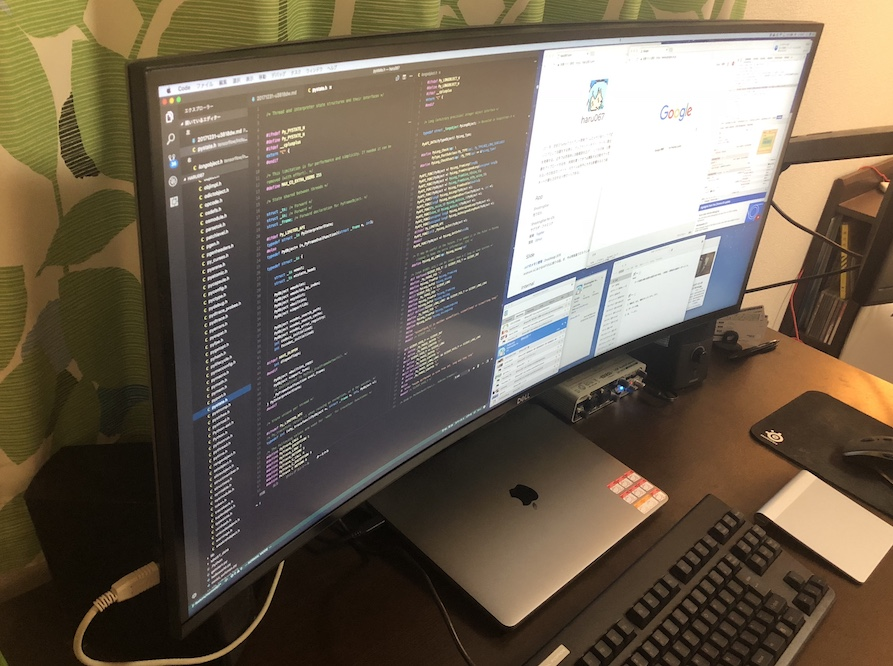
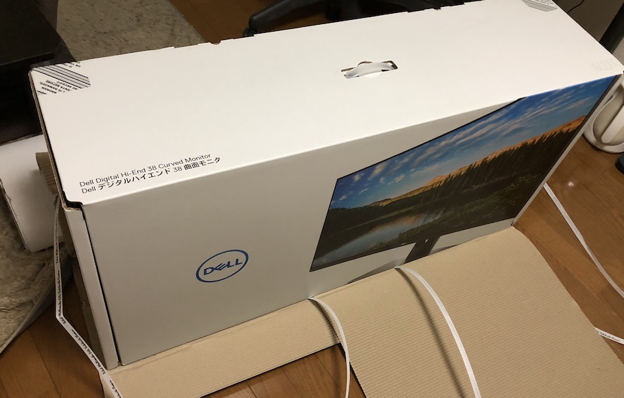
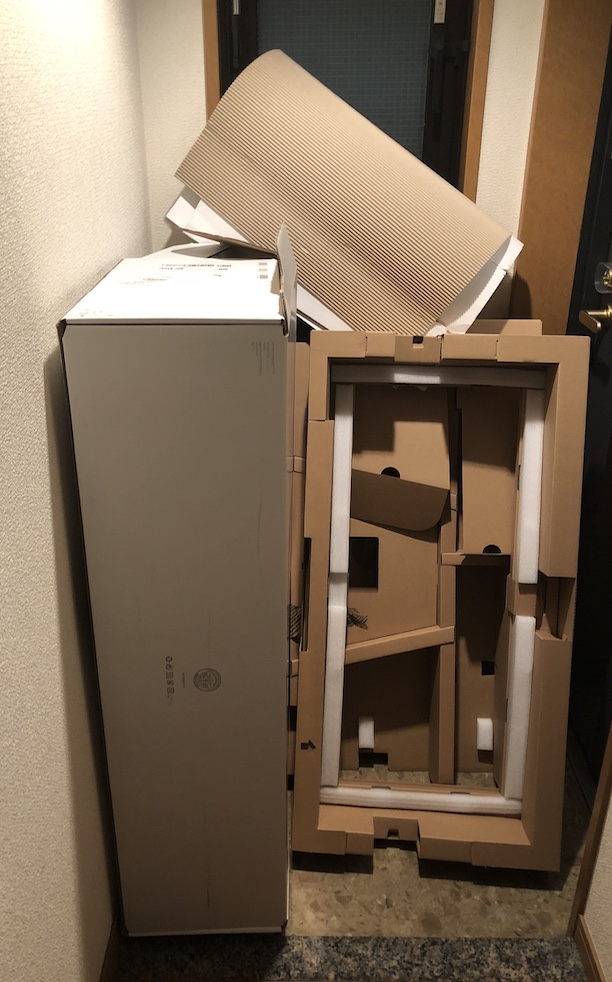
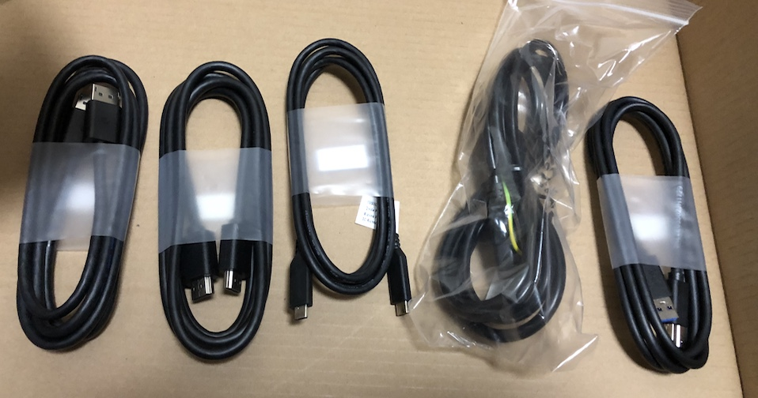
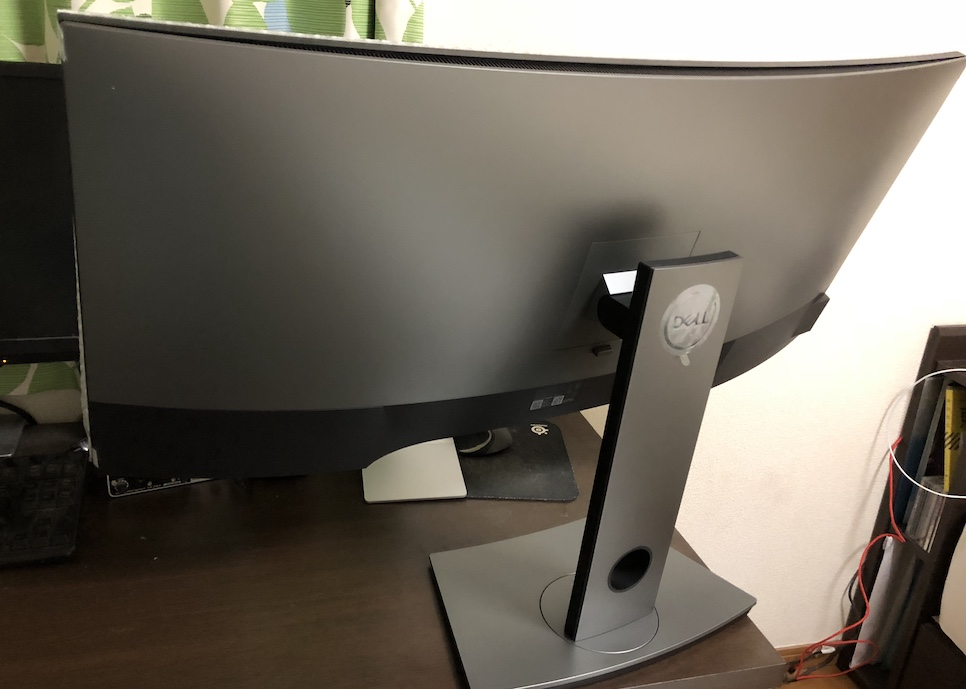
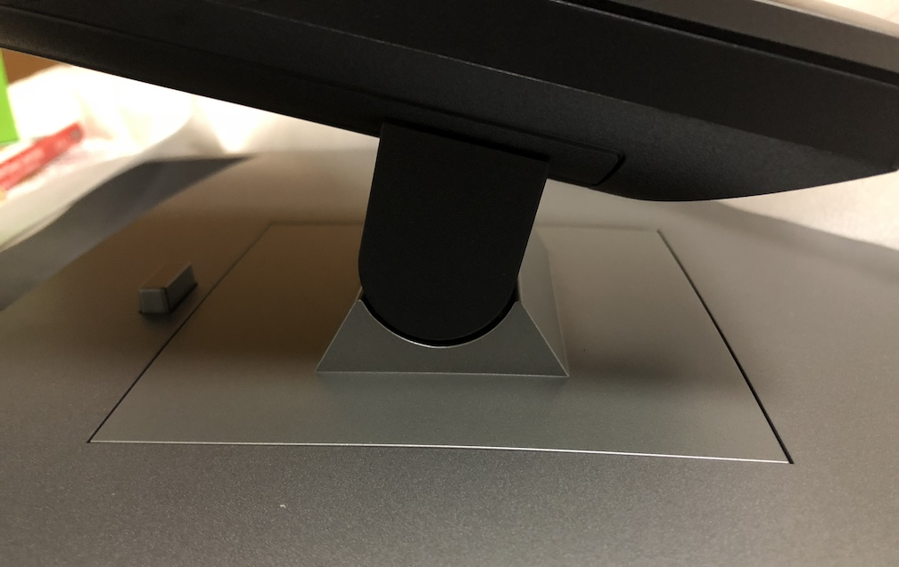
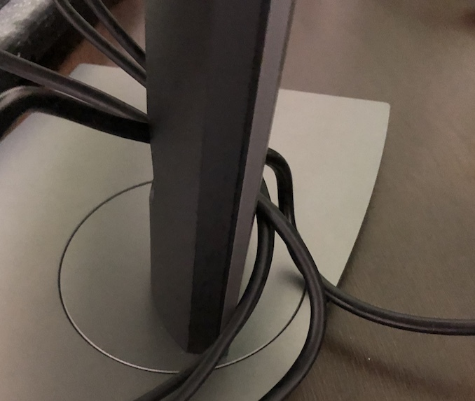
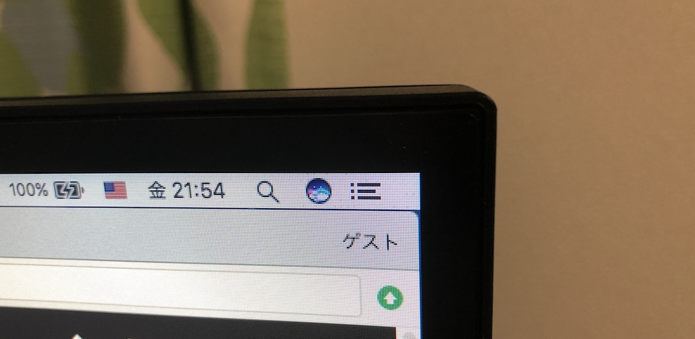
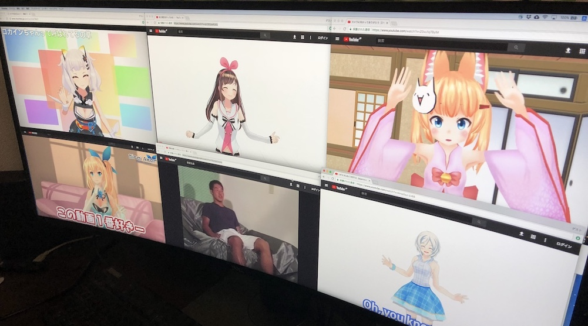
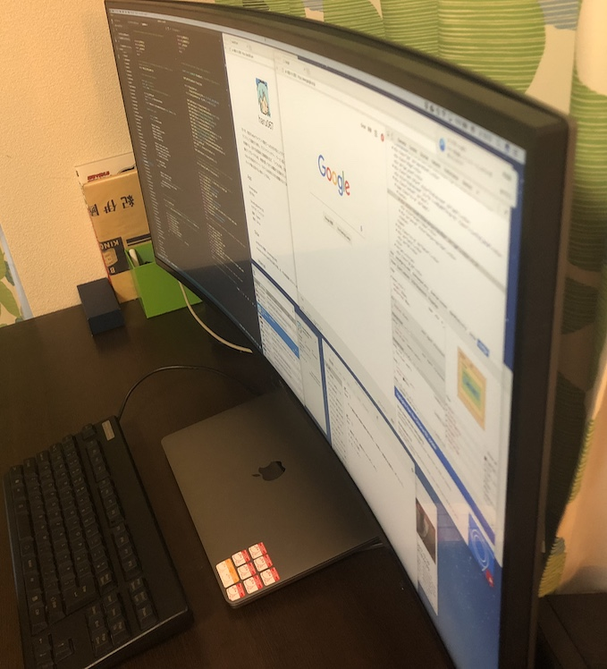

「ディスプレイ曲がってますよ」
機運が高まってきたので
DELLのクソデカ曲面ディスプレイを買った。

元々は23インチ、フルHDのモニタを家で使っていた。
かれこれ7年近く使用している。
それだけの月日が流れると、子供だったリンクは大人になるし、取り巻く環境も色々と変わって不満が出てくる。
大雑把に挙げると2つ。
- 配線をシンプルにやっていきたい
- 作業領域をでかくしたい
まず、MBPのイキリ仕様に振り回されてUSB-Cのハブを生やしたり、
Windows-Mac間でマウス/キーボードを共有するためのハブを生やしたりするのがしんどくなってきた。
ディスプレイに全ての責任を追わせてドック的に使いたい。
あとは、一人暮らしを始めて作業スペースが増えたことで、物理的にも論理的にも大きいディスプレイが欲しくなってきた。
まあ、要するに 「金を積んで全てを解決していくぞ！」 ということである。
検討
ひとえにディスプレイといっても色々あるが、今回の要件はこんな感じ。
- MBPと繋ぐことを考えるとUSB-Cは必須。かつUSB PDで充電したい（60W以上）
- ハブとして使うためのUSB3.0
- フルHDからの脱却。QHDか、できれば4K
- 表面処理はノングレア（非光沢）一択
- パネルはIPSがいいらしいのでIPSがいい
- アームが使える（VESAマウント）
- （多分使わないが）PBP、PIPがあるとなお良し
調べた結果わかったことは、USB-Cがあって、かつ電源供給がまともなものを探すと一気に候補が減る。
その中で色々吟味した結果、 「曲面ディスプレイ、そういうのもあるのか！」 と気づいてしまい、今に至る。
他の選択肢としては、
EIZOはスペックに対して値段が高すぎで、
LGはスペックは良いが、ロゴがダサいのと、ACアダプタがクソデカで萎えた。
その他のメーカーは高額な買い物でマイナーなやつを買いたくないというのがあり、却下。
そんなこんなでDELL U3818DWをポチる。お値段、14万。（14万！？）
そして、着弾

38インチ。デカい
・・・デカい！！！！

デカさのあまり家の玄関が終了した。もう外に出れないねえ

ケーブル類はHDMI、DisplayPortDi、USB-C、USB3.0、一通り揃ってる

背面のシンプルさが美しい。
端子類は下から刺すタイプ。省スペースだがそれゆえ刺しづらさはある。

アームはネジ無しでくっつく謎仕様。

ケーブルは穴に通していい感じに整理できる。

縁が薄くて良い。

話題のバーチャルユーチューバー達も1画面に収めることができる。強い。
・・・もっと現実的な話をすると、
ツイッターにエディタにブラウザにDevToolsを表示してもまだ余裕がある。強い。
解像度の暴力である。
そしてこれが一本刺すだけで画面が映って、充電されるわ、マウス/キーボードが繋がるわ全て解決する。すごい。

曲面感はある、間違いなく曲面と認識できるが悪い感じはしない。むしろあり。
これが近未来・・・！という感じがする。
その他、
- アームは一通り期待する方向に動いて良い感じ。曲面ゆえ当然ながら横向きにはできない。
- PBPで2画面にもできる。が、縦横比的には綺麗に行かないのでそこは妥協しないといけない
- USB3.0は裏面の端子群に2つある他、横にも2つ。スマホの充電に使えてｳﾚｼｲ…
気になった点
ぐらつく。安物の机が原因かもしれないが、キーボードでカタカタやると気になるレベルでグラグラする。
冷静に考えると超横長のディスプレイをアーム一本で支える以上、
物理的に揺れやすいという逃れられぬカルマを背負っているのかもしれない。
Enterをッターン！する各位は注意して欲しい。
あとは横に長いのでスピーカーを置くのが難しい。全てを諦めてディスプレイの裏に置いた。
まとめ
良い。値段が値段だが、これは良い買い物をしたな、と思った。
やはり解像度は正義だし、USB-Cで全てまとまるのが最高。
曲面は期待していなかったが想像以上に良い。
みんなも買おう、2018はUSB-C + 曲面ディスプレイが流行るぞ！！！
乗り遅れるな！！！